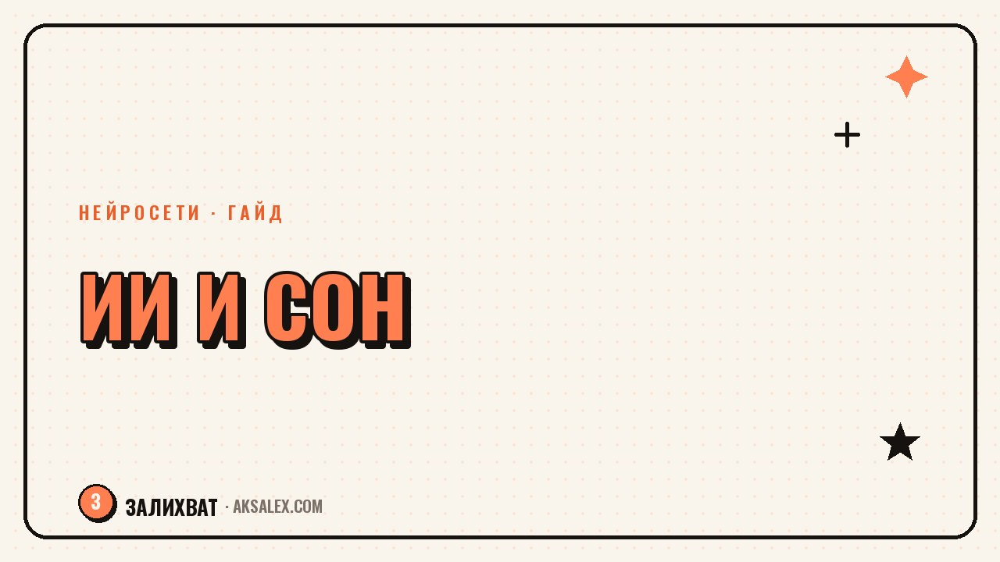

Нейросети для сна: как наладить качество отдыха

Если ты третью неделю засыпаешь в два ночи и просыпаешься разбитым, первая мысль - купить дорогой трекер сна. На самом деле нейросети для сна уже есть у тебя в телефоне: обычный чат с ИИ умеет разбирать дневник отдыха и находить закономерности в твоём расписании. Это не замена врачу при серьёзных нарушениях, но рабочий способ навести порядок в режиме своими силами.
Зачем вообще подключать ИИ к режиму сна
Самая частая причина плохого сна - не болезнь, а бытовой хаос: то ложишься в полночь, то в два, кофе после шести, телефон в кровати до последней секунды. Разглядеть эту картину сложно - ты в ней живёшь каждый день. Нейросеть, которой пересказал неделю, видит её со стороны.
Когда ИИ не поможет
Если не спишь из-за апноэ, тревожного расстройства, боли или приёма лекарств - это зона врача, а не чат-бота. Нейросеть не поставит диагноз: её задача - разобрать привычки и расписание, а не здоровье в целом.
Дневник сна: как превратить заметки в данные
Удобный вариант - вести дневник в заметках телефона: время отбоя и подъёма, что делал перед сном, сколько раз просыпался ночью. Через 10-14 дней скопируй текст и попроси нейросеть найти закономерности: в какие дни засыпаешь быстрее и что общего у плохих ночей.
- Время, когда лёг и когда встал - без округления до 'около'
- Чем занимался последний час перед сном
- Было ли кофе, алкоголь или тяжёлый ужин
- Сколько раз просыпался ночью
- Самочувствие утром по шкале от 1 до 5
Через две недели такой разбор обычно вскрывает одну-две вещи: что ты засыпаешь дольше в дни с лентой в кровати, или что ранний подъём на выходных путает режим недели.
Расшифровка данных со смарт-часов и трекеров
Если носишь фитнес-браслет, у тебя уже есть цифры по фазам сна и пульсу ночью - но приложение обычно показывает графики без объяснений. Выгрузи данные скриншотом и попроси нейросеть расшифровать их человеческим языком.
Цифры сна без объяснения - лишний повод для тревоги. Расшифровка превращает их в конкретный план на вечер.
Важно: нейросеть интерпретирует цифры из трекера, а не измеряет сон сама. Точность зависит от устройства - бюджетные браслеты часто ошибаются в фазах сна.
Вечерний ритуал и план на засыпание
Когда причины ясны, нейросеть пригодится, чтобы собрать вечерний ритуал под твой график, а не общий совет 'спи 8 часов'. Опиши рабочий день, во сколько реально можешь лечь, что любишь делать для расслабления - и попроси план на 30-60 минут перед сном с шагами по времени.
Пример запроса, который работает
Вместо 'помоги уснуть' напиши подробно: 'ложусь в районе 23:30, работаю за компьютером до последнего, вечером смотрю видео - составь план на последний час с действиями по минутам'. Чем точнее описание, тем полезнее план.
- За час до сна - без рабочей почты и новостей
- За 30 минут - приглушить свет, убрать телефон в другую комнату
- За 15 минут - дыхание или растяжка на 5 минут
- В кровати - книга или спокойный подкаст
Какие сервисы подходят для этой задачи
Специальных 'нейросетей сна' как продукта почти нет - работают обычные ИИ-помощники, которым даёшь контекст. Разница между ними - в удобстве загрузки данных и памяти разговора.
| Сервис | Что удобно | Ограничение |
|---|---|---|
| ChatGPT | Долго помнит контекст диалога | Нет интеграции с трекерами |
| Claude | Хорошо держит длинные дневники | Без синхронизации с устройствами |
| Приложение трекера | Считает фазы и пульс ночью | Объяснения общие, без контекста |
| Голосовой помощник | Быстро продиктовать заметку | Плохо разбирает данные за период |
На практике удобнее связка: трекер снимает цифры, а чат с нейросетью пару раз в месяц разбирает дневник. Платить за отдельное 'ИИ для сна' приложение почти всегда не обязательно.
Типичные ошибки при использовании ИИ для режима сна
Первая ошибка - просить диагноз вместо разбора привычек: 'почему я плохо сплю' без контекста даёт банальности. Вторая - разовый запрос без дневника. Третья - ждать результат за одну ночь, хотя привычки меняются за 2-3 недели.
Частые вопросы
Может ли нейросеть заменить врача-сомнолога?
Нет. Она разбирает привычки и расписание по твоим описаниям, но не видит физиологию и не ставит диагнозы. При хронической бессоннице, апноэ или других нарушениях нужен врач.
Какие данные нужны нейросети, чтобы разобрать режим сна?
Достаточно дневника за 10-14 дней: время отбоя и подъёма, что делал перед сном, пробуждения ночью и самочувствие утром. Чем подробнее записи, тем точнее разбор.
Нужен ли специальный трекер сна, чтобы использовать ИИ?
Нет, можно обойтись текстовыми заметками без устройств. Трекер даёт дополнительные цифры по фазам сна и пульсу, но базовый разбор нейросеть делает и по ручному дневнику.
Почему расшифровка данных со смарт-часов иногда расходится с реальностью?
Бюджетные браслеты часто ошибаются в определении фаз сна, потому что измеряют их по движению и пульсу, а не напрямую. Ошибка трекера переходит и в выводы нейросети.
Сколько нужно времени, чтобы увидеть результат от вечернего ритуала с ИИ-планом?
Первые изменения в скорости засыпания заметны через 1-2 недели. Привычка закрепляется за 2-3 недели, так что не стоит судить об эффективности после одной ночи.
Раз тема оказалась полезной, вот что почитать следующим. Как сделать лид-магнит для блога с помощью нейросети: форматы, шаги создания и ошибки, которые снижают конверсию.
Читать статью →а не вручную